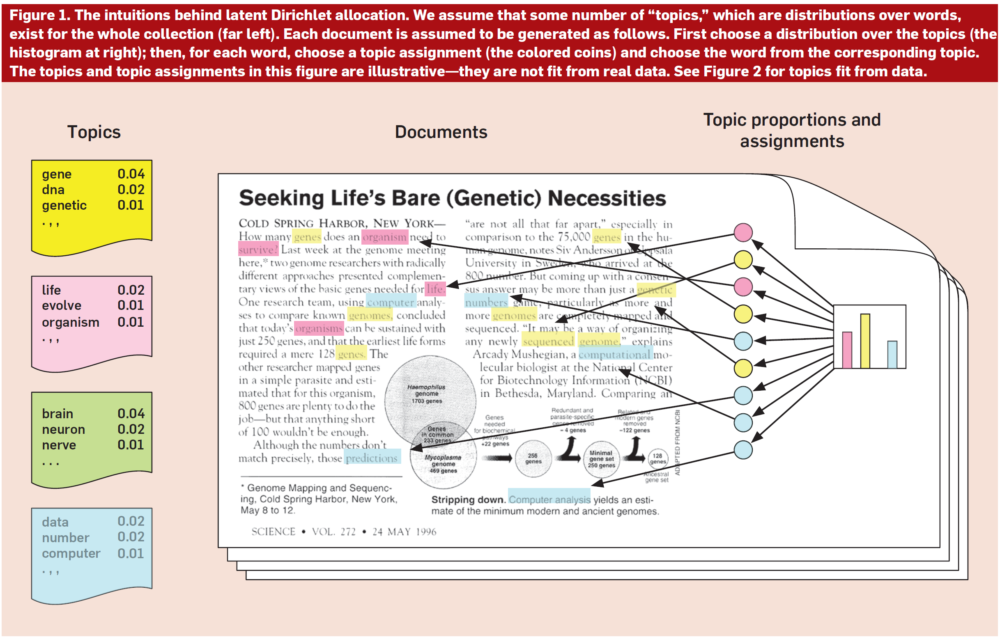

Unit 12#
Topic modelling#
Topic modelling is a very useful technique to get information from a large dataset. It is a type of unsupervised machine learning. Recall that supervised machine learning involved learning patterns from data, given a dataset and labels (e.g., movie reviews and stars). In unsupervised machine learning, we find patterns, but we do not have labels associated with the data. The task is to learn to classify or cluster the data by exploiting the patterns or similarities in the documents.
The basic idea behind topic modelling is that you can identify topics or themes in a collection of documents using words that co-occur. One of the implementations of this idea is LDA (Latent Dirichlet Allocation), which assumes a distribution that we try to find using words in the text. The figure below is from an easy to follow paper outlining LDA.

Diagram from: Blei, D. M. (2012). Probabilistic topic models. Communications of the ACM, 55(4), 77-84.
The data for topic modelling needs to be normalized following the usual steps we have done so far: tokenization, lemmatization, and stopword removal. Then, we use a topic modelling module to find the topics in the data.
The implementation here is based on a project on extracting topics from news articles, TACT.
If you want to see topic models in action, go to the research site for the Gender Gap Tracker and check topics for any month in the last 8 years. Those are the main topics covered in Canadian news.
Data#
We will work with a collection of news articles, a part of the SFU Opinion and Comments Corpus (SOCC). The corpus was collected in our lab, the Discourse Processing Lab, for a project on evaluative language in online news comments. It consists of: opinion articles, comments, and annotated comments from the Canadian newspaper The Globe and Mail. We’ll work with the articles, which should be in the data directory. If not, you can always download the corpus directly from the page above or from its Kaggle page and save the gnm_articles.csv file to your data directory.
Install gensim and import statements#
# run only once
!pip install gensim --user
import numpy as np
import pandas as pd
import re
import nltk
from nltk import word_tokenize
from nltk.stem import WordNetLemmatizer
from nltk.corpus import stopwords
stop_words = stopwords.words('english')
import gensim
from gensim import corpora
from gensim.models import LdaModel
Import and examine the data#
df = pd.read_csv('./data/gnm_articles.csv', encoding = 'utf-8')
df.info()
df.head()
Define a function to process the article_text column#
The only information we are interested in is in the article_text column, which contains the body of the articles. We will reuse and modify the function from last week to clean up that data. We will:
Remove the html tokens (the text has
<p>and</p>to mark paragraphs)Tokenize and lowercase
Remove stopwords
Lemmatize – this one is added from last week; we use the WordNet lemmatizer
We apply this function to the original df, to create a new column, article_processed. Then, we create a dictionary from that blob of text. You can also first extract the article_text to a string and process it, then create the dictionary (like we did in Week 12).
# define a function that: 1. tokenizes, 2. lowercases and
# 3. lemmatizes
# create the lemmatizer first
lemmatizer = WordNetLemmatizer()
# define the function
def process_text(text):
clean_text = re.sub(r'<.*?>', '', text)
words = word_tokenize(clean_text.lower())
cleaned_words = [word for word in words if word.isalpha() and word not in stop_words]
lemmatized_words = [lemmatizer.lemmatize(word) for word in cleaned_words]
return lemmatized_words
df['article_processed'] = df['article_text'].apply(process_text)
df.head()
Parameters for gensim#
Now that we have clean text, we will process it with gensim functions. The first one creates a dictionary of the words in the text. The second creates a corpus, a bag of words with the frequency of all the words. Finally, the LdaModel actually creates the topic model.
There are several parameters you can set with LDA models. For instance, you may want to filter out words that have very few instances, because they are only representative of one or two articles. In this case, what we are setting as parameters are the number of topics and the number of iterations. We train the model with 10 topics, that is, we assume that there are 10 topics across the entire dataset. And we do 15 passes.
Once we have extracted the topics, we can inspect the most representative X words in each topic. In this case, I set it to 20. One thing you could do is to try and label the topics. So, for instance, these are the two top topics when I run the model:
Topic 0: party, liberal, conservative, election, government, harper, minister, political, would, leader, ndp, campaign, prime, new, one, vote, voter, trudeau, could, time
Topic 1: per, cent, government, year, tax, canada, would, health, care, money, system, budget, cost, canadian, one, rate, spending, education, province, country
I could rename them to:
Topic 0 = Canadian politics
Topic 1 = Budget and government spending
The labels in the Gender Gap Tracker site are done manually every month.
# use the gensim function to create a dictionary of the words in the text
dictionary = corpora.Dictionary(df['article_processed'])
# you can inspect the contents of that dictionary
for token, token_id in list(dictionary.token2id.items())[:10]:
print('{} => {}'.format(token, token_id))
# use the doc2bow function to create a corpus, a bag of words (bow) of the text and the word counts
corpus = [dictionary.doc2bow(text) for text in df['article_processed']]
# create the LDA model
lda_model = LdaModel(corpus, num_topics=10, id2word=dictionary, passes=15)
# print the top 20 words for each topic
topics = lda_model.print_topics(num_words=20)
for topic_num, topic in topics:
print(f"Topic {topic_num}: ", end="")
words = topic.split(' + ')
word_list = [word.split('*')[1].strip('\"') for word in words]
print(", ".join(word_list))
print()
# you can also print the weight of each word in the topic
for topic_num, topic in topics:
print("Topic {}:".format(topic_num), end=" ")
words = topic.split(' + ')
word_weight_list = ["{} ({:.4f})".format(term.strip('\"'), float(weight)) for weight, term in (word.split('*') for word in words)]
print(", ".join(word_weight_list))
print()
Summary#
We have learned about topic modelling and how to extract topics from data using the LDA model in the gensim library.